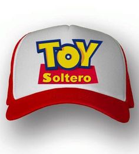
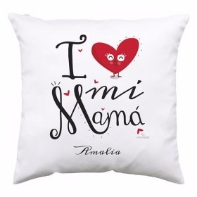

Elige un diseño o foto de las que tienes en tu ordenador.
Imprímela con una impresora de inyección de tinta que tenga los cartuchos cambiados por los de tinta sublimación.
Necesitas un papel especial para sublimación para obtener unos colores perfectos.
Luego recorta la imagen y pégala a la camiseta con una cinta adhesiva especial que resiste el calor.
Pon la camiseta en una plancha a una temperatura promedio que el proveedor disponga, espera el tiempo recomendado por tu proveedor y listo.
En Gorras

Elige un diseño o foto de las que tienes en tu ordenador.
Imprímela con una impresora de inyección de tinta que tenga los cartuchos cambiados por los de tinta sublimación.
Necesitas un papel especial para sublimación para obtener unos colores perfectos.
Luego recorta la imagen y pégala a la camiseta con una cinta adhesiva especial que resiste el calor.
Pon la gorra en una plancha especial con forma a una temperatura promedio que el proveedor disponga, espera el tiempo recomendado por tu proveedor y listo.
En Almohadas

Elige un diseño o foto de las que tienes en tu ordenador.
Imprímela con una impresora de inyección de tinta que tenga los cartuchos cambiados por los de tinta sublimación.
Necesitas un papel especial para sublimación para obtener unos colores perfectos.
Luego recorta la imagen y pégala a la tela frontal con una cinta adhesiva especial que resiste el calor.
Pon la tela en una plancha a una temperatura promedio que el proveedor disponga, espera el tiempo recomendado por tu proveedor.
Rellena la almohada con relleno de tu preferencia, luego has una costura para cerrar el orificio de relleno y listo.